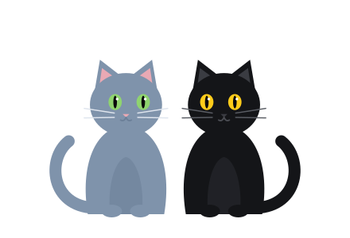
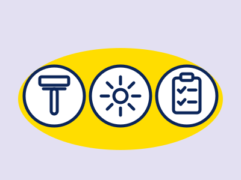
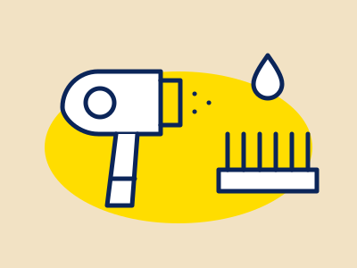
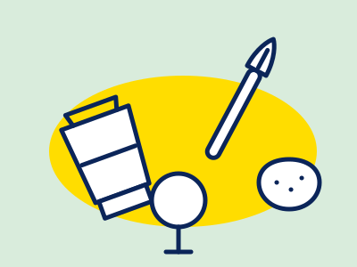
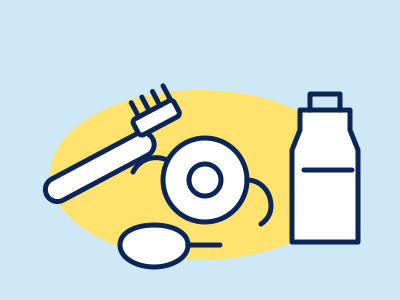
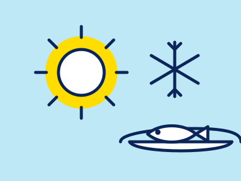
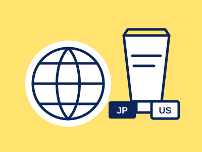

「男の養生帖」は、30代以降のビジネスパーソン・専門職の男性に向けて、見た目と体調の両方を整えるための成分知識・選び方を中立的な立場でまとめる情報サイトです。特定の商品を無条件に推奨するのではなく、成分の基礎知識や比較の視点をお伝えすることを目指しています。記事内の情報は医薬品的な効能効果を保証するものではありません。詳しくは広告表記・掲載基準・免責事項をご覧ください。
30代からの、
根拠で選ぶ
セルフケア

肌・髪・体・睡眠——年齢とともに気になり始めることを、選ぶ前に確かめるための手引きです。できるだけ一次情報（学会の診療ガイドライン・公的機関の資料）にあたり、商品の区分ごとに「言えること・言えないこと」を分けて整理しています。日々の手入れで体を整える「養生」を、仕事にも自分にも手を抜かない大人の男のために。
このサイトの約束
一次情報で確かめる
公的機関・学会の診療ガイドライン・医薬品の添付文書・メーカー公式などを確認し、変わりうる情報には出典と確認した日付を記載するようにしています（以前に公開した記事は、更新の際に順次対応します）。
区分ごとに、言えることを分ける
医薬品・医薬部外品・化粧品・食品では、表示できる効能の範囲が違います。それぞれの区分で認められている範囲で紹介することを基準にしています（処方薬は一般名で紹介し、製品名や効能は広告しません。基準を定める前に公開した記事は、表現を順次見直しています）。
広告であることを明示する
当サイトはアフィリエイト広告を利用しています。広告を含む記事には、冒頭に「PR」と表示しています。詳しくは広告表記・掲載基準をご覧ください。
順位をつけない
商品・サービスや医療機関を、ランキングや「おすすめ◯選」の形では紹介しません。複数を並べるときの並び順の基準は、各記事に記載しています。
最新記事

GROOMINGヒゲ脱毛：医療・エステ・家庭用の違い
医療機関・エステ・家庭用機器でできることの範囲、回数、リスク、契約・解約の確認点を公的資料で整理
+ 記事を読む
HAIR / CARE髪の傷み・パサつきの手入れ
ドライヤー・カラー・紫外線・摩擦と髪の傷みの関係、ドライヤーと自然乾燥の考え方、ミルクとオイルの違い、化粧品の表示の読み方を出典つきで整理
+ 記事を読む
SKIN / MAKEUPメンズBBクリームを選ぶ前に
日本の広告ルールで「言えること」、製品表示で確かめる点、落とし方、皮膚科に相談する目安を出典つきで整理
+ 記事を読む
ORAL / JAPAN, UK & US口臭ケアの基本
舌の清掃・フロス・洗口液・電動歯ブラシ。日本・英国・米国の公的機関の見解の違いと根拠の強さを整理
+ 記事を読む
SEASONAL / UK & JAPAN季節の栄養：冬のビタミンD
英国・米国・日本の摂取の目安の違いと上限量を、公的資料で整理
+ 記事を読む
SKIN / JAPAN & USレチノール・アダパレン・トレチノインの違い
化粧品・医薬部外品・処方薬の区分で、表示できる効能が違う。日本と米国の扱いを公的資料で整理
+ 記事を読む